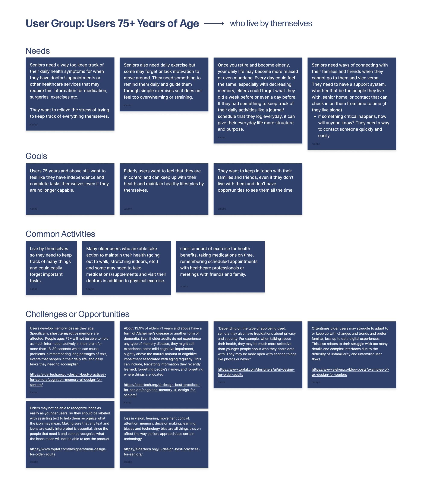
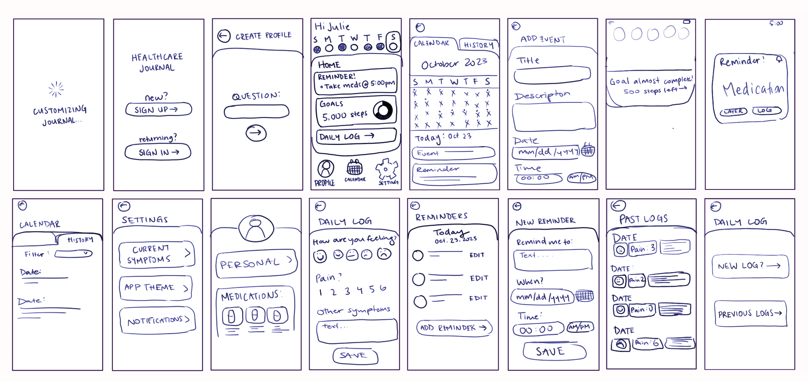
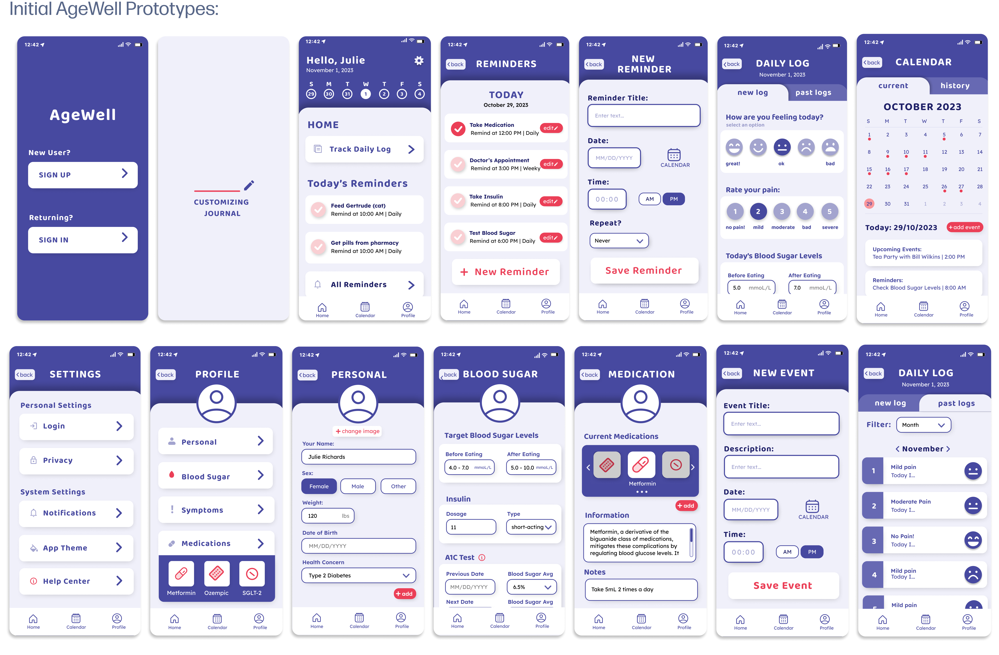
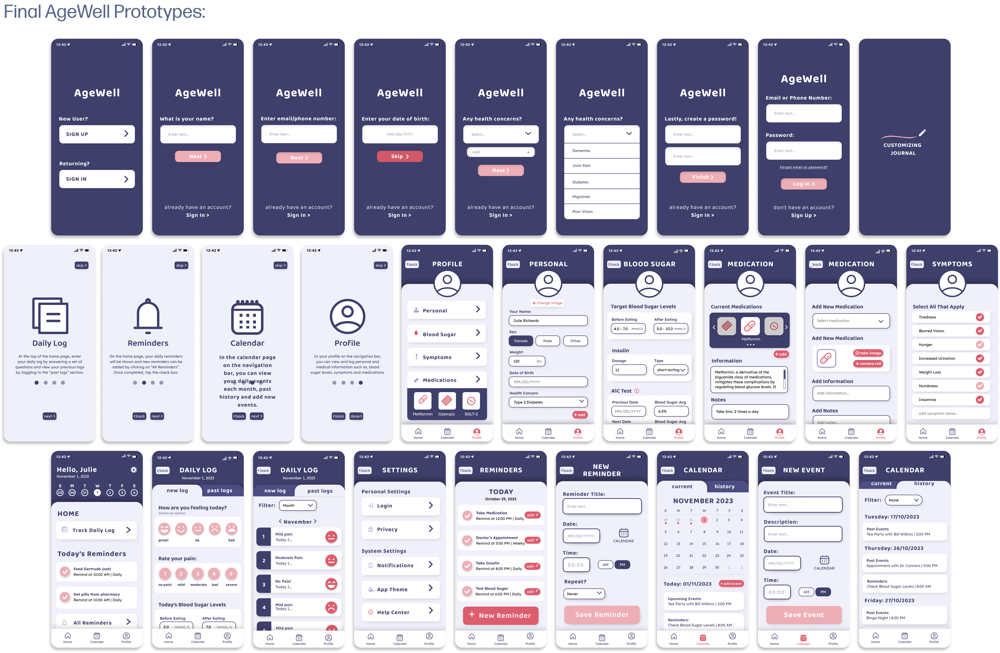
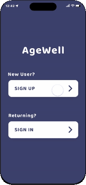
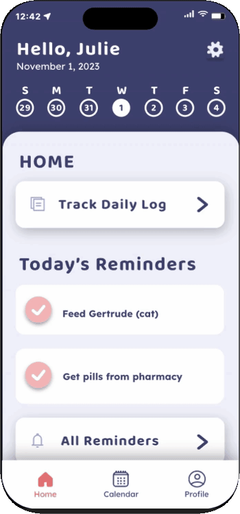
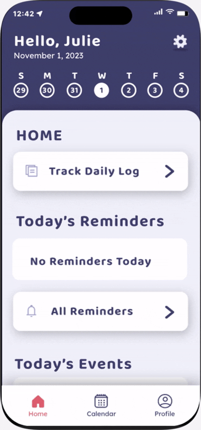
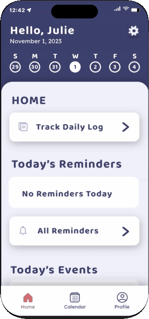
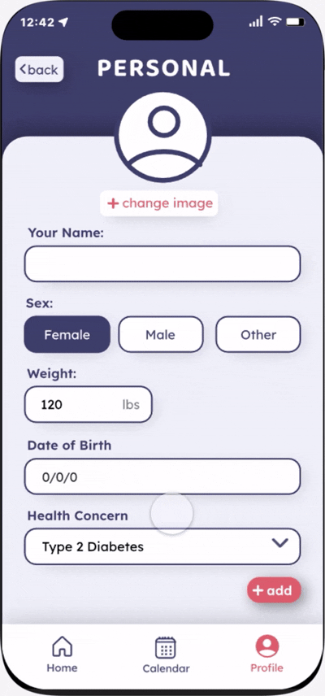

An Academic Project
My Contributions
Duration
6 Weeks (October - November 2023)
Role
Product Design
UI/UX Design
Art Direction
Prototyping
User Research and Testing
Tools
Figma
Protopie
Team Members
Karina Shuen
Lauryn Yau
Introduction
This project was given to us with the intent of teaching us how to design for an audience outside ourselves, to learn to find areas of meaningful and useful designs, learn to effectively conduct and evaluate user tests, as well as pitch and present our ideas for feedback, so we could do rapid iteration and improve each week leading up to the final product.
We were given an audience of users aged 75 and above and required to find a problem space and design a product for them through careful research and user testing, then pitch our solution as a sellable product by making a microsite to showcase it.
Initial Research Findings
During our research phase, I focused on finding common struggles for our user group, seeing where we could bring in a product to help ease the issue. We came across a bunch of sources stating that medical care for elderly people that live alone is a huge concern, so we decided to focus on that. I also did a whole bunch of research on how to visually design for this group, since I expected that it would be different than how we are used to designing for ourselves. Here are some of our key findings:

Problem Statement
Seniors aged 75 and above lack a way to easily track their daily activities or health concerns for future reference, as well as keep track of commitments such as doctors appointments, friend dates and other events.
Paper to Prototype
After conducting our research and narrowing down our problem space, we started doing quick sketches of what we wanted the UI to look like. I made sure to keep the UI looking simple and easy to navigate since our research showed that would better for senior users.

I then translated these sketches to mid-fidelity wireframes with the help of my team, splitting up the screens so we could get more done. This is also where I started testng our colour palettes and fonts, making sure that they would be easily readable and have enough contrast.

User Testing, Feedback, and Iterations
After prototyping and presenting our initial wireframes, we started user testing, using the think-aloud paired with post-test interviews to get as much valuable information as possible. The feedback we got was as follows:
Finally, I decided to darken the color pallete to increase the contrast, making sure to test it in greyscale, as well as implementing more of the secondary colour to highlight interaction points, and we ended up with the final wireframes.

Final Product
AgeWell is a health and wellness app for seniors that utilizes journaling, reminders, event logs, and health tracking to allow seniors to keep track of all their needs in one convenient place.
On-Boarding

The on-boarding process gathers important health information to automatiaclly set up related symptoms, so that users do not need to do all the set up themselves. Non-essential information input is skippable, so users do not need to enter information they might not want to. It also quickly introduces the main features in a skippable sequence, so that unfamiliar users are able to quickly understand exaclty which button does what, and what the key features are.
Homepage

The homepage is where users can find all the main features, including the reminders, event notfications, and the daily logs. The reminders on the homepage are simpler than the reminders page to avoid repetition or confusion. Reminders can be checked off as they are completed, helping reduce the cognitive load and signifying to users that they are complete.
Daily Log

Users can log their emotions, pain levels, health related information, and exercise information. Clickable elements have a slight drop shadow to indicate the interaction. All past logs are also available to see for reference when needed. These daily logs will come in handy when the user has an appointment with their healthcare provider and need to reference symptomps they had on certain days.
Calendar

The calendar page is where users are able to add events and view past or upcoming events. These events can include things like appointments, commintments, family events and much more.
User Profile

Lastly, the profile page is where users can customize the app to their needs, including their symptoms, medication, and other personal information. Since this "user" is diabetic, there is a specific area for them to log their blood sugar levels and insulin doses.
What I Learned
What Would I do Next?
Since this project was a while ago, I think I can improve the consistency of the design, and look into seeing how I could expand this to work for more types of health concerns while still keeping the UI easy to navigate.